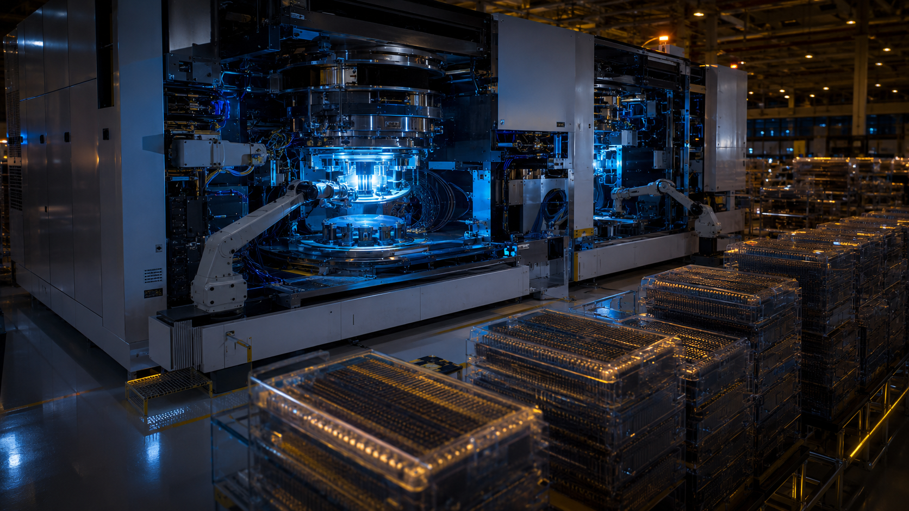

Santiago Rodríguez Agúndez
Executive Chairman at INGENOSTRUM · 13 mayo
El sector de infraestructura IA necesitará 7 billones de dólares de inversión de aquí a 2030.
Siete billones. En seis años.
Para dimensionarlo: el PIB de Alemania es de 4,5 billones. El de toda la zona euro es de 15 billones. La infraestructura digital que el mundo necesita para correr la siguiente generación de modelos equivale a construir, desde cero, más de una Alemania en capacidad de cómputo, energía y conectividad.
La pregunta que eso genera es inevitable: ¿dónde se construye?
Esta semana, Data Center Dynamics ha publicado el análisis técnico de la adquisición de INGENOSTRUM por IREN. Lo que el sector especializado valora no es solo la cifra — es lo que la operación demuestra: que en España existe ya capacidad asegurada, conexión a red real y ejecución probada.
El IDC AI & Data Summit en Madrid esta semana reúne a quienes tomarán las decisiones de inversión que moverán parte de esos 7 billones hacia Europa. España está en la agenda. El debate ahora no es si España, sino cuánto y en qué plazos.
Hace tres semanas, explicaba en este espacio que el activo más escaso no era el capital ni la demanda. Era la capacidad de ejecutar en un entorno regulado, con energía disponible y sin riesgo geopolítico.
Esa tesis ha sido validada dos veces en los últimos 30 días: primero por IREN, luego por Amazon con 33.700 millones.
Lo que viene ahora es la tercera validación. Y la cuarta. Y la quinta.
El mapa está trazado. La pregunta es qué papel elige jugar España.

{kind=link}
{kind=link}
{kind=link}
{kind=link}
{kind=link}
{kind=link}
{kind=link}